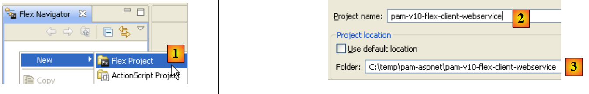
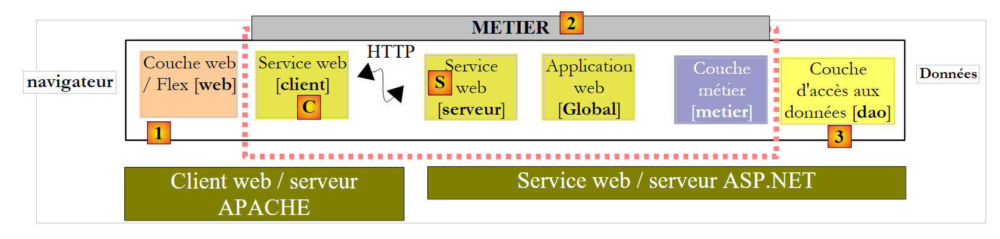
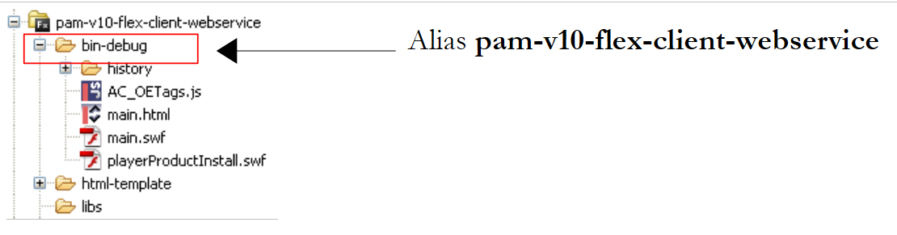
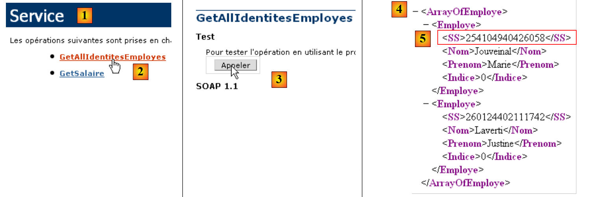
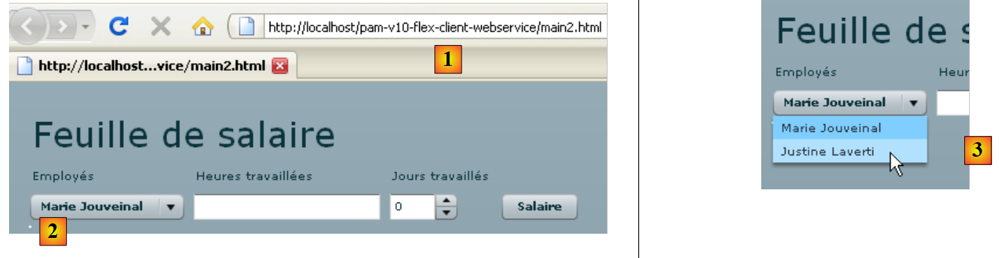
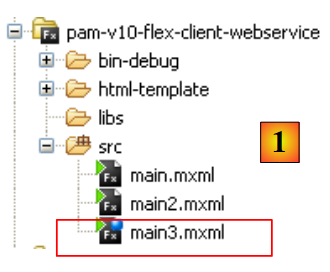
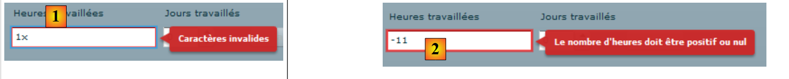

14. A aplicação [SimuPaie] – versão 10 – um cliente Flex para um serviço web ASP.NET
Apresentamos agora um cliente Flex para o serviço web ASP.NET, versão 5. O IDE utilizado é o Flex Builder 3. Uma versão de demonstração deste produto pode ser descarregada no URL [https://www.adobe.com/cfusion/tdrc/index.cfm?loc=fr_fr&product=flex]. O Flex Builder 3 é um IDE baseado no Eclipse. Além disso, para executar o cliente Flex, utilizamos um servidor web Apache da ferramenta Wamp [http://www.wampserver.com/]. Qualquer servidor Apache funciona. O navegador que exibe o cliente Flex deve ter o Flash Player versão 9 ou superior instalado.
As aplicações Flex são únicas na medida em que são executadas no plugin Flash Player do navegador. Nesse aspeto, são semelhantes às aplicações Ajax, que incorporam scripts JavaScript nas páginas enviadas para o navegador, os quais são depois executados no próprio navegador. Uma aplicação Flex não é uma aplicação web no sentido habitual: é uma aplicação cliente para serviços fornecidos por servidores web. Nesse sentido, é análoga a uma aplicação de ambiente de trabalho que seria cliente desses mesmos serviços. Difere, no entanto, num aspeto: é inicialmente descarregada de um servidor web para um navegador equipado com o plugin Flash Player capaz de a executar.
Tal como uma aplicação de secretária, uma aplicação Flex é composta principalmente por dois elementos:
- uma camada de apresentação: as vistas exibidas no navegador. Estas vistas oferecem a mesma riqueza que as janelas de aplicações de secretária. Uma vista é descrita utilizando uma linguagem de marcação chamada MXML.
- uma secção de código que lida principalmente com eventos desencadeados por ações do utilizador na vista. Este código pode ser escrito em MXML ou numa linguagem orientada para objetos chamada ActionScript. Há dois tipos de eventos a distinguir:
- eventos que requerem comunicação com o servidor web: preencher uma lista com dados fornecidos por uma aplicação web, enviar dados de formulário para o servidor, etc. O Flex fornece vários métodos para comunicar com o servidor de uma forma transparente para o programador. Estes métodos são assíncronos por predefinição: o utilizador pode continuar a interagir com a vista enquanto o pedido ao servidor está em curso.
- eventos que modificam a vista apresentada sem trocar dados com o servidor, como arrastar um item de uma árvore e soltá-lo numa lista. Este tipo de evento é tratado inteiramente a nível local, dentro do navegador.
Uma aplicação Flex é frequentemente executada da seguinte forma:
 |
- em [1], é solicitada uma página HTML
- em [2], esta é enviada. Inclui um ficheiro binário SWF (ShockWave Flash) que contém toda a aplicação Flex: todas as vistas e o seu código de tratamento de eventos. Este ficheiro será executado pelo plugin Flash Player do navegador.
 |
- O cliente Flex é executado localmente no navegador, exceto quando necessita de dados externos. Nesse caso, solicita-os ao servidor [3]. Recebe-os em [4] em vários formatos: XML ou binário. A aplicação consultada no servidor web pode ser escrita em qualquer linguagem. Apenas o formato da resposta é relevante.
Descrevemos a arquitetura de execução de uma aplicação Flex para que o leitor possa compreender a diferença entre esta e a de uma aplicação web tradicional, onde as páginas não incorporam código (JavaScript, Flex, Silverlight, etc.) que o navegador executaria. Nesta última, o navegador é passivo: limita-se a apresentar páginas HTML criadas no servidor web que lhas envia.
14.1. Arquitetura de aplicação cliente/servidor
A arquitetura cliente/servidor implementada aqui é semelhante à das versões 6 e 8:
 |
Em [1], a camada web ASP.NET é substituída por uma camada web Flex escrita em MXML e ActionScript. O cliente [C] será gerado pelo IDE Flex Builder. Deve-se notar aqui que esta arquitetura inclui dois servidores web não mostrados:
- um servidor web ASP.NET que executa o serviço web [S]
- um servidor web Apache que executa o cliente web [1]
14.2. O projeto do cliente Flex 3
Criamos o cliente Flex utilizando o IDE Flex Builder 3:
 |
- no Flex Builder 3, criamos um novo projeto em [1]
- atribuímos-lhe um nome em [2] e especificamos em [3] em que pasta o queremos gerar
 |
- em [4], nomeamos a aplicação principal (aquela que será executada)
- em [5], o projeto uma vez gerado
- em [6], o ficheiro MXML principal da aplicação
- Um ficheiro MXML contém uma vista e o código para gerir os seus eventos. O separador [Source] [7] dá acesso ao ficheiro MXML. Aí encontrará tags <mx> que descrevem a vista, bem como código ActionScript.
- A vista pode ser criada graficamente utilizando o separador [Design] [8]. As tags MXML que descrevem a vista são então geradas automaticamente no separador [Source]. O inverso também é verdadeiro: as tags MXML adicionadas diretamente no separador [Source] são refletidas graficamente no separador [Design].
14.3. Vista n.º 1
Iremos construir gradualmente uma interface web semelhante à da Versão 1 (ver Secção 4). Primeiro, iremos construir a seguinte interface:
 |
- em [1], a vista quando a ligação ao serviço web foi bem-sucedida. A lista suspensa de funcionários é então preenchida.
- em [2], a visualização quando a ligação ao serviço web falha. É então apresentada uma mensagem de erro.
O ficheiro principal do cliente [main.xml] é o seguinte:
<?xml version="1.0" encoding="utf-8"?>
<mx:Application xmlns:mx="http://www.adobe.com/2006/mxml" layout="vertical"
creationComplete="init()">
<mx:VBox width="100%">
<mx:Label text="Feuille de salaire" fontSize="30"/>
<mx:HBox>
<mx:VBox>
<mx:Label text="Employés"/>
<mx:ComboBox id="cmbEmployes" dataProvider="{employes}" labelFunction="displayEmploye"/>
</mx:VBox>
<mx:VBox>
<mx:Label text="Heures travaillées"/>
<mx:TextInput id="txtHeuresTravaillees"/>
</mx:VBox>
<mx:VBox>
<mx:Label text="Jours travaillés"/>
<mx:NumericStepper id="joursTravailles" minimum="0" maximum="31" stepSize="1"/>
</mx:VBox>
<mx:VBox>
<mx:Label text=""/>
<mx:Button id="btnSalaire" label="Salaire"/>
</mx:VBox>
</mx:HBox>
<mx:TextArea id="msg" minWidth="400" minHeight="100" editable="false" visible="true" enabled="true" horizontalScrollPolicy="auto" verticalScrollPolicy="auto" x="0" y="0" maxHeight="100" maxWidth="400"/>
</mx:VBox>
<mx:WebService ...>
...
</mx:WebService>
<mx:Script>
<![CDATA[
...
// données
[Bindable]
private var employes : ArrayCollection;
private function init():void{
...
}
]]>
</mx:Script>
</mx:Application>
Neste código, devem ser distinguidos vários elementos:
- a definição da aplicação (linhas 2–3)
- a descrição da sua vista (linhas 4–25)
- os manipuladores de eventos ActionScript dentro da tag <mx:Script> (linhas 31–42)
- a definição do serviço web remoto (linhas 27–29)
Vamos começar por comentar a definição da própria aplicação e a descrição da sua vista:
- Linhas 2–3: define:
- o layout dos componentes dentro do contêiner da visualização. O atributo layout="vertical" indica que os componentes serão dispostos um abaixo do outro.
- o método a ser executado quando a vista for instanciada, ou seja, quando todos os seus componentes tiverem sido instanciados. O atributo creationComplete="init();" indica que o método init na linha 38 deve ser executado. creationComplete é um dos eventos que a classe Application pode emitir.
- As linhas 4–25 definem os componentes da vista
- Linhas 4–25: um contentor vertical: os componentes serão colocados um abaixo do outro
- Linha 5: define um componente de texto
- Linhas 6–23: um contentor horizontal: os componentes serão colocados horizontalmente dentro dele.
- Linhas 7–10: um contentor vertical que irá conter texto e uma lista suspensa
- linha 8: o texto
- linha 9: a lista suspensa na qual será colocada a lista de funcionários. A tag dataProvider="{employees}" especifica a fonte de dados que deve preencher a lista. Aqui, a lista será preenchida com o objeto employees definido na linha 36. Para poder escrever dataProvider="{employees}", o campo employees deve ter o atributo [Bindable] (linha 35). Este atributo permite que uma variável ActionScript seja referenciada fora da tag <mx:Script>. O campo employees é do tipo ArrayCollection, um tipo ActionScript que permite armazenar listas de objetos, neste caso uma lista de objetos do tipo Employee.
- Linhas 11–14: um contentor vertical que irá conter texto e um campo de entrada
- linha 12: o texto
- Linha 13: o campo de entrada para as horas trabalhadas.
- linhas 15-18: um contentor vertical que irá conter texto e um contador
- linha 16: o texto
- linha 17: o contador para introduzir os dias trabalhados
- Linhas 19–22: um contentor vertical que irá conter texto e um botão que irá acionar o cálculo do salário da pessoa selecionada no menu suspenso.
- Linha 20: o texto
- linha 21: o botão.
- linha 23: fim do contentor horizontal iniciado na linha 6
- Linha 24: uma área de texto num componente TextArea. Apresentará mensagens de erro.
- Linha 25: Fim do contentor vertical iniciado na linha 4
As linhas 4–25 geram a seguinte visualização no separador [Design]:
 |
- [1]: foi gerado pelo componente Label na linha 5
- [2]: foi gerado pelo componente ComboBox na linha 9
- [3]: foi gerado pelo componente TextInput na linha 13
- [4]: foi gerado pelo componente NumericStepper na linha 17
- [5]: foi gerado pelo componente Button na linha 21
- [6]: foi gerado pelo componente TextArea na linha 24
Agora, vamos examinar a declaração do serviço web remoto:
<mx:WebService id="pam"
wsdl="http://localhost:1077/Service1.asmx?WSDL"
fault="wsFault(event);"
showBusyCursor="true">
<mx:operation
name="GetAllIdentitesEmployes"
result="loadEmployesCompleted(event)"
fault="loadEmployesFault(event);">
<mx:request/>
</mx:operation>
</mx:WebService>
- linha 1: o serviço web é um componente com o identificador «pam» (atributo id)
- linha 2: o URI do ficheiro WSDL do serviço web (ver secção 9.2)
- linha 3: o método a executar em caso de erro durante a comunicação com o serviço web: o método wsFault.
- linha 4: solicita que seja exibido um indicador para mostrar ao utilizador que está em curso uma troca de dados com o serviço web.
- Linhas 5–10: uma das operações oferecidas pelo serviço web remoto. Aqui, o método GetAllIdentitesEmployes.
- linha 7: o método a executar quando a chamada a este método for concluída com sucesso, ou seja, quando o serviço web devolver com sucesso a lista de funcionários
- Linha 8: O método a executar quando a chamada a este método terminar com um erro.
- Linha 9: Os parâmetros para a operação GetAllEmployeeIDs. Sabemos que este método não espera quaisquer parâmetros. Por isso, deixamos a tag <mx:request> vazia.
Vamos agora examinar o código ActionScript associado ao serviço web:
<mx:Script>
<![CDATA[
import mx.rpc.events.FaultEvent;
import mx.collections.ArrayCollection;
import mx.rpc.events.ResultEvent;
// données
[Bindable]
private var employes : ArrayCollection;
private function init():void{
// on note les coordonnées de la zone de message
msgHeight=msg.height;
msgWidth=msg.width;
// on cache la zone de message
hideMsg();
// requête au service web distant pour avoir la liste simplifiée des employés
pam.GetAllIdentitesEmployes.send();
}
private function wsFault(event:Event):void{
// on signale l'erreur
msg.text="Service distant indisponible";
showMsg();
}
private function loadEmployesCompleted(event:ResultEvent):void{
// remplissage combo des employés
employes=event.result as ArrayCollection;
}
private function displayEmploye(employe:Object):String{
// identité d'un employé
return employe.Prenom + " " + employe.Nom;
}
private function loadEmployesFault(event:FaultEvent):void{
// affichage msg d'erreur
msg.text=event.fault.message;
// formulaire
showMsg();
}
// gestion des blocs
private var msgWidth:int;
private var msgHeight:int;
private function hideMsg():void{
msg.height=0;
msg.width=0;
}
private function showMsg():void{
msg.height=msgHeight;
msg.width=msgWidth;
}
]]>
</mx:Script>
- Linha 11: O método init é executado quando a aplicação é iniciada, porque escrevemos:
<mx:Application xmlns:mx="http://www.adobe.com/2006/mxml" layout="vertical"
creationComplete="init()">
- linhas 13-14: guardamos a altura e a largura da área de mensagens. Utilizamos dois métodos, hideMsg (linhas 48-51) e showMsg (linhas 53-56), para ocultar ou mostrar a área de mensagem, respetivamente, dependendo de ter ocorrido ou não um erro. O método hideMsg oculta a área de mensagem definindo a sua altura e largura como 0. O método showMsg apresenta a área de mensagem restaurando a altura e a largura guardadas no método init.
- Linha 16: A área de mensagem está oculta. Inicialmente, não há erros.
- Linha 18: O método GetAllIdentitesEmploye (linha 6 do serviço web) do serviço web pam (linha 1 do serviço web) é chamado. A chamada é assíncrona. A linha 7 do serviço web indica que o método loadEmployesCompleted será executado se esta chamada assíncrona for concluída com sucesso. A linha 8 do serviço web indica que o método loadEmployesFault será executado se esta chamada assíncrona falhar.
- Linha 27: O método loadEmployesCompleted, que é executado se a chamada do serviço web na linha 18 for concluída com sucesso.
- Linha 29: Sabemos que o serviço web devolve uma resposta XML. É útil consultar isto para compreender o código ActionScript:
 |
- em [1], a página do serviço web [Service.asmx]
- em [2], o link para a página de teste do método [GetAllIdentitesEmployes]
- em [3], o teste é executado. Não são esperados parâmetros.
- Em [4]: A resposta XML contém uma matriz de funcionários. Para cada funcionário, existem cinco informações incluídas nas tags <Id>, <Version>, <SS>, <LastName> e <FirstName>. Se a resposta XML for armazenada numa matriz `employees` do tipo `ArrayCollection`:
- employees.getItemAt(i): é o i-ésimo elemento da matriz
- employees.getItemAt(i).SS: é o número de segurança social deste funcionário.
- employees.getItemAt(i).LastName: é o apelido desse funcionário
- ...
Voltemos ao código ActionScript:
- linha 29: event.result representa a resposta XML do serviço web. O método GetAllIdentitesEmployes devolve uma matriz de funcionários. event.result representa esta matriz de funcionários. Está armazenada numa variável do tipo ArrayCollection, um tipo que geralmente representa uma coleção de objetos. Esta variável, denominada employees, é declarada na linha 9. Recorde-se que esta variável é a fonte de dados para a caixa combinada de funcionários:
<mx:ComboBox id="cmbEmployes" dataProvider="{employes}" labelFunction="displayEmploye"/>
Para cada funcionário na sua fonte de dados, a caixa de combinação chamará o método displayEmploye (atributo labelFunction) para exibir o funcionário. As linhas 32–34 mostram que este método exibe o nome e o apelido do funcionário.
- Linha 37: O método loadEmployesFault, que é executado se a chamada ao serviço web na linha 18 falhar. event.fault.message é a mensagem de erro devolvida pelo serviço web.
- Linha 39: Esta mensagem de erro é colocada na caixa de mensagem
- Linha 41: A caixa de mensagem é exibida.
Depois de a aplicação ter sido compilada, o seu código executável encontra-se na pasta [bin-debug] do projeto Flex:
 |
Acima,
- o ficheiro [main.html] representa o ficheiro HTML que o navegador irá solicitar ao servidor web para obter o cliente Flex
- o ficheiro [main.swf] é o binário do cliente Flex que será incorporado na página HTML enviada ao navegador e, em seguida, executado pelo plugin Flash Player do navegador.
Estamos prontos para executar o cliente Flex. Primeiro, precisamos de configurar o ambiente de execução necessário. Voltemos à arquitetura cliente/servidor que testámos:
 |
Do lado do servidor:
- Inicie o serviço Web ASP.NET [S]
Lado do cliente:
- Inicie o servidor Apache que irá servir a aplicação Flex.
Aqui estamos a utilizar a ferramenta Wamp. Com esta ferramenta, podemos atribuir um alias à pasta [bin-debug] do projeto Flex.
 |
- O ícone do Wamp encontra-se na parte inferior do ecrã [1]
- Clique com o botão esquerdo do rato no ícone do Wamp, selecione a opção Apache [2] / Alias Directories [3, 4]
- Selecione a opção [5]: Adicionar um alias
 |
- Em [6], atribua um alias (qualquer nome) à aplicação web que será executada
- Em [7], especifique a raiz da aplicação web que utilizará este alias: trata-se da pasta [bin-debug] do projeto Flex que acabámos de compilar.
Vamos rever a estrutura da pasta [bin-debug] no projeto Flex:
 |
O ficheiro [main.html] é o ficheiro HTML da aplicação Flex. Graças ao alias que acabámos de criar para a pasta [bin-debug], este ficheiro estará acessível através do URL [http://localhost/pam-v10-flex-client-webservice/main.html]. Acedemos a este URL num navegador com o plugin Flash Player versão 9 ou superior:
 |
- em [1], a URL da aplicação Flex
- em [2], o menu suspenso dos funcionários quando tudo está a funcionar corretamente
- em [3], o resultado quando o serviço web é interrompido
Talvez esteja curioso para ver o código-fonte da página HTML recebida:
- O corpo da página começa na linha 25. Não contém HTML padrão, mas sim um objeto (linha 28) do tipo "application/x-shockwave-flash" (linha 41). Este é o ficheiro [main.swf] (linha 31) encontrado na pasta [bin-debug] do projeto Flex. É um ficheiro grande: aproximadamente 600 KB para este exemplo simples.
14.4. Vista n.º 2
Vamos adicionar um novo contentor VBox à vista atual:
 |
 |
- Em [4,5], definimos [main2.mxml] como a nova aplicação predefinida. É esta que será agora compilada.
- Em [6], a aplicação predefinida é indicada por um ponto azul.
O contentor [1] irá apresentar informações sobre o funcionário selecionado na caixa combinada [2]. Duplicamos [main.xml] como [main2.xml] [3] para criar a nova vista. Iremos agora trabalhar com [main2.xml].
 |
A alteração feita ao projeto anterior é a adição do contentor na linha 26 acima, que contém o código MXML para o contentor [1] da vista. Atribuímos-lhe o identificador employe para que possamos manipulá-lo através do código. Este contentor deve poder ser ocultado ou exibido utilizando a mesma técnica anteriormente utilizada para a área de mensagens.
Voltemos ao layout visual da vista:
 |
Vamos identificar os diferentes contentores para as novas informações apresentadas:
- V1: contentor vertical para todos os componentes: o rótulo «Empregado [1]» e os contentores horizontais [H1] e [H2]
- H1: contentor horizontal para as informações de Apelido, Nome próprio e Morada
- V2: contentor vertical para o rótulo «Apelido» e a exibição do apelido do funcionário.
- H2: contentor horizontal para as informações de Cidade, Código Postal e Índice
O código completo para o contentor «employe» é o seguinte:
<mx:VBox id="employe" width="100%">
<mx:Label text="Employé" fontSize="20" color="#09F3EB"/>
<mx:HBox>
<mx:VBox >
<mx:Label text="Nom"/>
<mx:VBox backgroundColor="#EECA05">
<mx:Text id="lblNom" minWidth="100" minHeight="20" fontFamily="Verdana" textAlign="center"/>
</mx:VBox>
</mx:VBox>
<mx:VBox >
<mx:Label text="Prénom"/>
<mx:VBox backgroundColor="#EECA05">
<mx:Text id="lblPreNom" minWidth="100" minHeight="20" fontFamily="Verdana" textAlign="center"/>
</mx:VBox>
</mx:VBox>
<mx:VBox >
<mx:Label text="Adresse"/>
<mx:VBox backgroundColor="#EECA05">
<mx:Text id="lblAdresse" minWidth="250" minHeight="20" fontFamily="Verdana" textAlign="center"/>
</mx:VBox>
</mx:VBox>
</mx:HBox>
<mx:HBox>
<mx:VBox >
<mx:Label text="Ville"/>
<mx:VBox backgroundColor="#EECA05">
<mx:Text id="lblVille" minWidth="100" minHeight="20" fontFamily="Verdana" textAlign="center"/>
</mx:VBox>
</mx:VBox>
<mx:VBox >
<mx:Label text="Code Postal"/>
<mx:VBox backgroundColor="#EECA05">
<mx:Text id="lblCodePostal" minWidth="70" minHeight="20" fontFamily="Verdana" textAlign="center"/>
</mx:VBox>
</mx:VBox>
<mx:VBox >
<mx:Label text="Indice"/>
<mx:VBox backgroundColor="#EECA05">
<mx:Text id="lblIndice" minWidth="20" minHeight="20" fontFamily="Verdana" textAlign="center"/>
</mx:VBox>
</mx:VBox>
</mx:HBox>
</mx:VBox>
O código é autoexplicativo. Vamos explicar brevemente o contentor vertical que exibe o nome do funcionário, por exemplo:
- linhas 4–9: o contentor vertical
- linha 5: o rótulo «Nome»
- Linhas 6–8: um contentor vertical que exibirá o nome do funcionário (linha 7). Queremos atribuir uma cor de fundo diferente aos campos que exibem as informações do funcionário. O componente Text não oferece esta opção (ou talvez eu não tenha procurado bem). É possível definir a cor de fundo de um contentor. É por isso que foi utilizado aqui.
- Linha 7: O componente Text que irá exibir o nome do funcionário. Definimos uma altura e largura mínimas para ele.
Iremos utilizar o contentor «employee» para apresentar as informações do funcionário que o utilizador selecionar no menu suspenso de funcionários, independentemente do botão [Salário], que será utilizado posteriormente para calcular o salário assim que todas as informações necessárias tiverem sido introduzidas.
Para refletir a alteração na seleção na caixa de combinação «funcionários», o seu código MXML é alterado da seguinte forma:
<mx:ComboBox id="cmbEmployes" dataProvider="{employes}" labelFunction="displayEmploye" change="displayInfosEmploye();"/>
O evento de alteração é acionado pela caixa de combinação quando o utilizador altera a sua seleção. O manipulador para este evento será o método displayInfosEmploye.
Vamos rever os métodos expostos pelo serviço web remoto:
// liste de toutes les identités des employés
public Employe[] GetAllIdentitesEmployes();
// ------- le calcul du salaire
public FeuilleSalaire GetSalaire(string ss, double heuresTravaillees, int joursTravailles);
Aqui, queremos apresentar as informações (apelido, nome próprio, etc.) do funcionário selecionado no menu suspenso. O serviço web não disponibiliza um método para recuperar estas informações. No entanto, podemos utilizar o método GetSalary, passando o número de segurança social do funcionário selecionado e 0 para as horas e dias trabalhados. Será realizado um cálculo redundante do salário, mas o método GetSalary irá devolver um objeto PayStub contendo as informações de que precisamos.
A declaração atual do serviço web é modificada para incluir a definição do método GetSalaire:
<mx:WebService id="pam"
wsdl="http://localhost:1077/Service1.asmx?WSDL"
fault="wsFault(event);"
showBusyCursor="true">
<mx:operation
name="GetAllIdentitesEmployes"
result="loadEmployesCompleted(event)"
fault="loadEmployesFault(event);">
<mx:request/>
</mx:operation>
<mx:operation name="GetSalaire"
result="getSalaireCompleted(event)"
fault="getSalaireFault(event);">
<mx:request>
<ss>{employes.getItemAt(cmbEmployes.selectedIndex).SS}</ss>
<heuresTravaillees>{heuresTravaillees}</heuresTravaillees>
<joursTravailles>{joursDeTravail}</joursTravailles>
</mx:request>
</mx:operation>
</mx:WebService>
- linhas 11-19: a definição do método GetSalary do serviço web
- linha 12: define o método a executar quando a chamada ao método GetSalaire for bem-sucedida
- linha 13: define o método a executar quando a chamada ao método GetSalaire falhar
- linhas 14-18: o método GetSalaire espera três parâmetros. Estes são definidos dentro de uma tag <mx:request> na forma <param1>valor1</param1>. O identificador param1 não pode ser arbitrário. Deve utilizar os nomes esperados pelo serviço web:
 |
- em [1], a página do serviço web [http://localhost:1077/Service1.asmx]
- em [2], o link para a página de teste do método [GetSalaire]
- em [3], os parâmetros esperados pelo método. Estes são os nomes que devem ser utilizados como tags filhas da tag <mx:request>.
Voltemos à declaração do serviço web:
<mx:operation name="GetSalaire"
result="getSalaireCompleted(event)"
fault="getSalaireFault(event);">
<mx:request>
<ss>{employes.getItemAt(cmbEmployes.selectedIndex).SS}</ss>
<heuresTravaillees>{heuresTravaillees}</heuresTravaillees>
<joursTravailles>{joursDeTravail}</joursTravailles>
</mx:request>
</mx:operation>
- Linha 5: o parâmetro ss. Recorde-se que, quando a aplicação Flex é iniciada, a matriz de todos os funcionários foi armazenada numa variável chamada employees do tipo ArrayCollection.
- employees.getItemAt(i): é o funcionário número i na matriz
- employees.getItemAt(i).SS: é o número de segurança social deste funcionário.
- cmbEmployees.selectedIndex: é o índice do item selecionado na caixa de combinação de funcionários cmbEmployees.
No código acima, como sabemos que SS é o número de segurança social de um funcionário? Para responder a isto, precisamos de consultar a resposta enviada pelo método GetAllIdentitiesEmployees:
 |
- em [1], a página do serviço web [Service.asmx]
- em [2], o link para a página de teste do método [GetAllIdentitesEmployes]
- em [3], o teste é executado. Não são esperados parâmetros.
- Em [4]: A resposta XML contém uma matriz de funcionários. Esta matriz é armazenada na variável `employees`. Conforme mostrado em [5], `SS` é, de facto, a tag utilizada para armazenar o número de segurança social.
Vamos concluir a nossa análise do serviço web:
<mx:operation name="GetSalaire"
result="getSalaireCompleted(event)"
fault="getSalaireFault(event);">
<mx:request>
<ss>{employes.getItemAt(cmbEmployes.selectedIndex).SS}</ss>
<heuresTravaillees>{heuresTravaillees}</heuresTravaillees>
<joursTravailles>{joursDeTravail}</joursTravailles>
</mx:request>
</mx:operation>
- linha 6: o número de horas trabalhadas será fornecido por uma variável horasTrabalhadas
- linha 6: o número de dias trabalhados será fornecido por uma variável daysWorked
Estas variáveis devem ser declaradas dentro da tag <mx:Script> com o atributo [Bindable], o que permite que sejam referenciadas por componentes MXML (linhas 7–10 abaixo).
<mx:Script>
<![CDATA[
...
// données
[Bindable]
private var employes : ArrayCollection;
[Bindable]
private var heuresTravaillees:Number;
[Bindable]
private var joursDeTravail:int;
...
</mx:Script>
O código de tratamento de eventos da vista altera-se da seguinte forma:
<mx:Script>
<![CDATA[
import mx.rpc.events.FaultEvent;
import mx.collections.ArrayCollection;
import mx.rpc.events.ResultEvent;
// données
[Bindable]
private var employes : ArrayCollection;
[Bindable]
private var heuresTravaillees:Number;
[Bindable]
private var joursDeTravail:int;
private function init():void{
// on note les hauteur / largeur de # blocs
employeHeight=employe.height;
employeWidth=employe.width;
// on cache certains éléments
hideEmploye();
...
}
private function displayInfosEmploye():void{
// formulaire
hideEmploye();
// on calcule un salaire fictif
heuresTravaillees=0;
joursDeTravail=0;
pam.GetSalaire.send();
}
private function getSalaireCompleted(event:ResultEvent):void{
...
}
private function getSalaireFault(event:FaultEvent):void{
...
}
// vues partielles -------------------------------------------------
private var employeHeight:int;
private var employeWidth:int;
private function hideEmploye():void{
employe.height=0;
employe.width=0;
}
private function showEmploye():void{
employe.height=employeHeight;
employe.width=employeWidth;
}
]]>
</mx:Script>
- Linha 15: O método init, executado quando a aplicação Flex é iniciada, armazena a altura e a largura do contentor vertical dos funcionários para que possa ser restaurado (linhas 50–53) após ser ocultado (linhas 45–48).
- Linha 24: O método displayInfosEmploye é executado quando o utilizador altera a sua seleção na caixa combinada de funcionários.
- Linha 26: O contentor «employee» é ocultado se estava anteriormente visível
- Linha 30: O método GetSalary do serviço web é chamado de forma assíncrona. Sabemos que ele espera três parâmetros:
<ss>{employes.getItemAt(cmbEmployes.selectedIndex).SS}</ss>
<heuresTravaillees>{heuresTravaillees}</heuresTravaillees>
<joursTravailles>{joursDeTravail}</joursTravailles>
- Linha 1: O parâmetro ss será o número SS do funcionário selecionado na caixa de combinação de funcionários
- linha 2: o método displayInfosEmploye atribui o valor 0 à variável horasTrabalhadas (linha 28)
- linha 3: o método displayInfosEmploye atribui o valor 0 à variável daysWorked (linha 29)
O método GetSalaireCompleted é executado se o método GetSalaire do serviço web for concluído com sucesso:
private function getSalaireCompleted(event:ResultEvent):void{
// hide error msg
hideMsg();
// you receive a payslip
var feuilleSalaire:Object=event.result;
// display
lblNom.text=feuilleSalaire.Employe.Nom;
lblPreNom.text=feuilleSalaire.Employe.Prenom;
lblAdresse.text=feuilleSalaire.Employe.Adresse;
lblVille.text=feuilleSalaire.Employe.Ville;
lblCodePostal.text=feuilleSalaire.Employe.CodePostal;
lblIndice.text=feuilleSalaire.Employe.Indice;
showEmploye();
}
- Linha 3: Ocultamos a caixa de mensagem, caso esta seja apresentada.
- Linha 5: Recuperamos o recibo de vencimento devolvido pelo método GetSalary
Para saber exatamente o que o método GetSalaire devolve, voltamos à página do serviço web:
 |
- [1] é a página do serviço web [Service.asmx]
- em [2], o link que leva à página de teste do método [GetSalaire]
- em [3], fornecemos parâmetros
- em [4], o XML resultante.
Voltemos ao método getSalaireCompleted:
private function getSalaireCompleted(event:ResultEvent):void{
// hide error msg
hideMsg();
// you receive a payslip
var feuilleSalaire:Object=event.result;
// display
lblNom.text=feuilleSalaire.Employe.Nom;
lblPreNom.text=feuilleSalaire.Employe.Prenom;
lblAdresse.text=feuilleSalaire.Employe.Adresse;
lblVille.text=feuilleSalaire.Employe.Ville;
lblCodePostal.text=feuilleSalaire.Employe.CodePostal;
lblIndice.text=feuilleSalaire.Employe.Indemnites.Indice;
showEmploye();
}
- Linha 5: PayrollSheet = event.result representa o feed XML [4] devolvido pelo método GetSalary. A partir deste feed, podemos ver que:
- payrollSheet.Employee é o fluxo XML de um funcionário
- sheetSalary.Employee.Name é o nome deste funcionário
- ...
- linhas 7–12: o feed XML Payroll.Employee é utilizado para preencher os vários campos do contentor do funcionário.
- linha 13: o contentor do funcionário é apresentado.
O método getSalaireFault é executado se o método GetSalaire do serviço web falhar:
private function getSalaireFault(event:FaultEvent):void{
// error msg display
msg.text=event.fault.message;
// form
showMsg();
}
- Linha 3: A mensagem de erro event.fault.message é colocada na caixa de mensagem
- linha 5: a caixa de mensagem é exibida
Isto conclui as alterações necessárias para esta nova versão. Quando guardar e se a sintaxe estiver correta, a versão executável é gerada na pasta [bin-debug] do projeto:
 |
Acima, [main2.html] é a página HTML que incorpora o binário da aplicação Flex [main2.swf], que será executado pelo Flash Player.
Podemos testar esta nova versão:
- o serviço web ASP.NET deve estar em execução
- o servidor Apache deve estar em execução para o cliente Flex
Partindo do princípio de que o alias [pam-v10-flex-client-webservice] utilizado na versão anterior ainda existe, solicitamos a URL [http://localhost/pam-v10-flex-client-webservice/main2.html] ao servidor Apache num navegador:
 |
 |
- em [1], o URL solicitado
- em [2], o menu suspenso dos funcionários
- em [3], altere a seleção no menu suspenso para acionar o evento de alteração
- em [4], o resultado obtido: o perfil de Justine Laverti.
14.5. Vista #3
A Vista 3 trata da validação do formulário. Aqui, apenas o campo de entrada «txtHeuresTravaillees» é verificado. Enquanto o formulário estiver inválido, o botão «btnSalaire» permanecerá desativado.
Para adicionar esta funcionalidade, duplicamos o ficheiro [main2.mxml] para [main3.mxml]:
 |
A partir de agora, vamos trabalhar com [main3.mxml], que definiremos como a aplicação predefinida (consulte este conceito na secção 14.4). Primeiro, adicionamos um atributo ao componente «txtHeuresTravaillees»:
<mx:TextInput id="txtHeuresTravaillees" change="validateForm(event)"/>
Sempre que o conteúdo do campo de entrada "txtHeuresTravaillees" for alterado, o método validateForm é chamado. Trata-se de um método local escrito pelo programador. Nele, poderíamos verificar se o conteúdo do campo de entrada "txtHeuresTravaillees" é, de facto, um número inteiro positivo. Vamos proceder de forma diferente, utilizando um componente de validação:
<mx:NumberValidator id="heuresTravailleesValidator" source="{txtHeuresTravaillees}" property="text"
precision="2" allowNegative="false"
invalidCharError="Caractères invalides"
precisionError="Deux chiffres au plus après la virgule"
negativeError="Le nombre d'heures doit être positif ou nul"
invalidFormatCharsError="Format invalide"
required="true"
requiredFieldError="Donnée requise"/>
- linha 1: O componente <mx:NumberValidator> verifica se outro componente contém um número inteiro ou um número real.
- linha 1: O atributo id atribui um identificador ao componente.
- linha 1: source é o ID do componente que está a ser validado pelo componente NumberValidator. Aqui, o campo de entrada "txtHeuresTravaillees" está a ser validado.
- Linha 1: property é o nome da propriedade do componente de origem que contém o valor a ser validado. Em última análise, é o valor source.property que é validado, neste caso txtHeuresTravaillees.text.
- Linha 2: precision define o número máximo de casas decimais permitidas. precision=0 significa que o número introduzido deve ser um número inteiro.
- Linha 2: allowNegative especifica se os números negativos são permitidos ou não
- Linha 7: required especifica se a entrada é obrigatória ou não.
Quando uma condição de validação não é cumprida, é exibida uma mensagem de erro numa dica de ferramenta junto ao componente inválido. Por predefinição, estas mensagens estão em inglês. Pode definir estas mensagens você mesmo:
- (continuação)
- invalidCharError: a mensagem de erro quando o texto contém um caractere que não pode aparecer num número
- precisionError: a mensagem de erro quando o número de casas decimais está incorreto em relação ao atributo precision
- negativeError: a mensagem de erro quando o número é negativo, mas o atributo allowNegative="false" está definido
- requiredFieldError: a mensagem de erro quando não foi fornecida qualquer entrada, apesar de o atributo requiredField="true" estar definido
- invalidFormatCharsError: a mensagem de erro que aparece quando o texto contém caracteres inválidos ou tem um formato inválido?
Voltemos ao componente "txtHeuresTravaillees":
<mx:TextInput id="txtHeuresTravaillees" change="validateForm(event)"/>
O método validateForm poderia ser o seguinte dentro da tag <mx:Script>:
private function validateForm(event:Event):void
{
// validate hours worked
var evt:ValidationResultEvent = heuresTravailleesValidator.validate();
// successful validation?
btnSalaire.enabled=evt.type==ValidationResultEvent.VALID;
}
- Linha 4: O validador "heuresTravailleesValidator" é executado. Ele retorna um resultado do tipo ValidationResultEvent.
- Linha 6: evt.type é do tipo String e indica o tipo de evento. evt.type tem dois valores possíveis para o tipo ValidationResultEvent: "invalid" ou "valid", representados pelas constantes ValidationResultEvent.INVALID e ValidationResultEvent.VALID. Se, na linha 4, a validação foi bem-sucedida, evt.type deve ter o valor ValidationResultEvent.VALID. Neste caso, o botão btnSalaire é ativado; caso contrário, é desativado.
Isto é suficiente para testar a validade das horas trabalhadas.
 |
Acima, a compilação do projeto produziu os ficheiros [main3.html] e [main3.swf]. Introduzimos o URL [http://localhost/pam-v10-flex-client-webservice/main3.html] num navegador e verificamos vários casos de erro:
 |
 |
- um campo incorreto tem uma moldura vermelha [1, 2, 3], um campo correto tem uma moldura azul [4].
- Em [4], repare que o botão [Salário] está ativo porque o número de horas trabalhadas está correto.
14.6. Vista n.º 4
A Vista 4 completa o formulário de cálculo do salário. Para tal, duplicamos [main3.xml] para [main4.xml] e passamos a trabalhar com main4, que definimos como a aplicação predefinida (ver secção 14.4).
 |
As alterações feitas em [main4.xml] [1] são as seguintes:
- foi adicionado um novo contentor vertical à vista [2] para apresentar os componentes salariais do funcionário
- foi adicionado um componente para formatar valores monetários [3]
- a exibição dos componentes salariais é gerida pelo manipulador associado ao evento «click» do botão «btnSalaire».
A vista evolui da seguinte forma:
 |
O novo contentor segue o mesmo princípio que o anterior. Trata-se de um contentor VBox vertical [V1] que contém quatro contentores HBox horizontais [Hi]. Os contentores horizontais H1 a H3 são compostos por contentores verticais que contêm dois rótulos, sendo que o segundo se encontra, por sua vez, dentro de um contentor vertical para fornecer uma cor de fundo.
Pergunta 1: Escreva o contentor «salary». Doravante, será referido como «complements».
Pergunta 2: Escreva os métodos para ocultar/mostrar o contentor «complements». Inspire-se no que foi feito anteriormente para o contentor «employee».
Associamos um manipulador ao evento «click» do botão «btnSalaire»:
<mx:Button id="btnSalaire" label="Salaire" click="calculerSalaire()"/>
O método *calculerSalaire* é o seguinte:
private function calculerSalaire():void{
// form preparation
affichageSalaire=true;
msg.text="";
// salary calculation parameters
heuresTravaillees=Number(txtHeuresTravaillees.text);
joursDeTravail=int(joursTravailles.value);
// the salary is requested from the web service
pam.GetSalaire.send();
}
- Linha 3: A variável booleana displaySalary é utilizada para indicar se se deve ou não apresentar o contentor de complementos, que exibe os detalhes do salário. O método getSalaryCompleted é executado em dois eventos:
- quando o funcionário é alterado na lista suspensa de funcionários para exibir as suas informações sem o salário. Neste caso, é definido salaryDisplay=false.
- cálculo do salário
- Linha 6: O texto no campo de entrada txtHeuresTravaillees é convertido num número real.
- Linha 7: O valor do contador daysWorked é convertido num inteiro.
- Linha 9: O método remoto GetSalary é chamado. Note que este método espera três parâmetros, incluindo os parâmetros hoursWorked e daysWorked inicializados nas linhas 6 e 7. Note também que, se a chamada assíncrona ao método GetSalary:
- for bem-sucedida, o método getSalaireCompleted será chamado
- falhar, o método getSalaireFault será chamado
Pergunta 3: Complete o método getSalaireCompleted atual para que ele exiba o salário do funcionário caso o botão btnSalaire tenha sido clicado.
Atualmente, os itens salariais são apresentados sem o símbolo do euro. Pode incluí-lo no código ou utilizar um formatador. Esta é a abordagem que estamos a adotar neste momento. O formatador será o seguinte:
<mx:CurrencyFormatter id="eurosFormatter" precision="2"
currencySymbol="€" useNegativeSign="true"
alignSymbol="right"/>
- Linha 1: id é o identificador do formatador, precision é o número de casas decimais a manter.
- Linha 2: currencySymbol é o símbolo da moeda a utilizar. useNegativeSign indica se se deve ou não utilizar o sinal de menos para valores negativos.
- Linha 3: alignSymbol especifica onde colocar o símbolo da moeda em relação ao número.
Este formatador é utilizado no código do script da seguinte forma:
- eurosFormatter é o ID do formatador a utilizar
- format é o método a chamar para formatar um número. Devolve uma cadeia de caracteres.
- feuilleSalaire.Indemnites.BaseHeure é o número a ser formatado.
- lblSH é o nome de um componente Text.
Questão 4: Modifique o método getSalaireCompleted para que utilize o formatador de moeda.